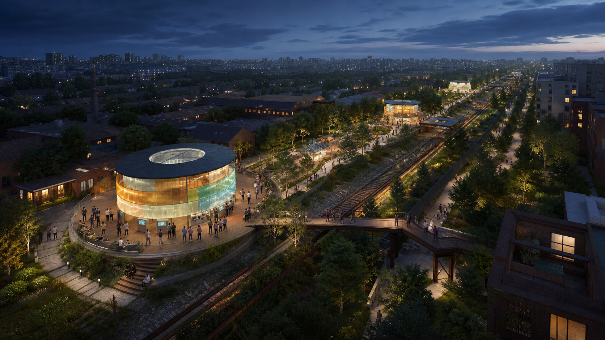
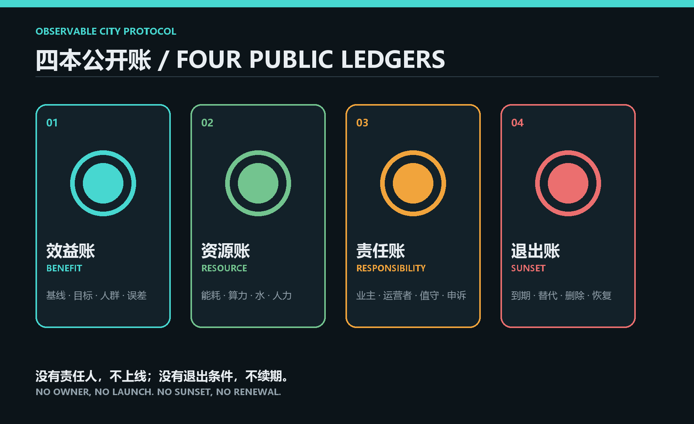
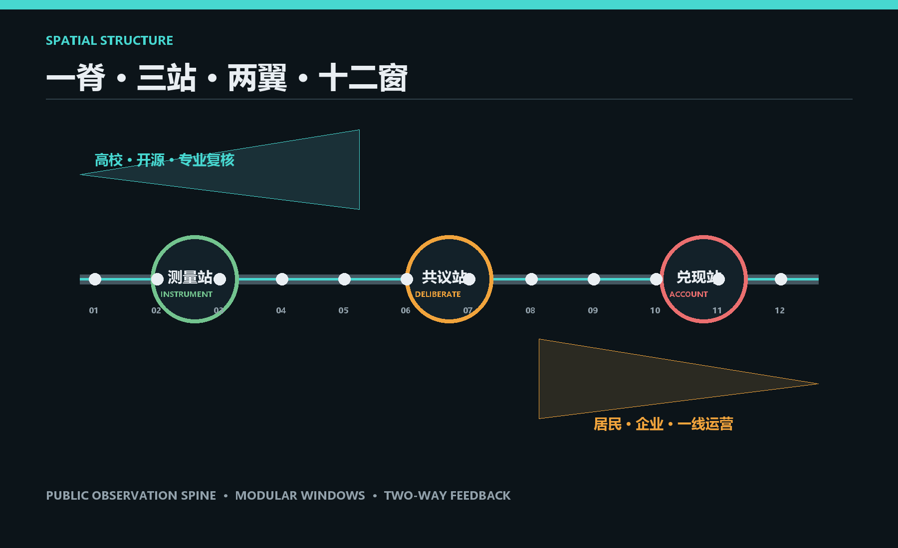
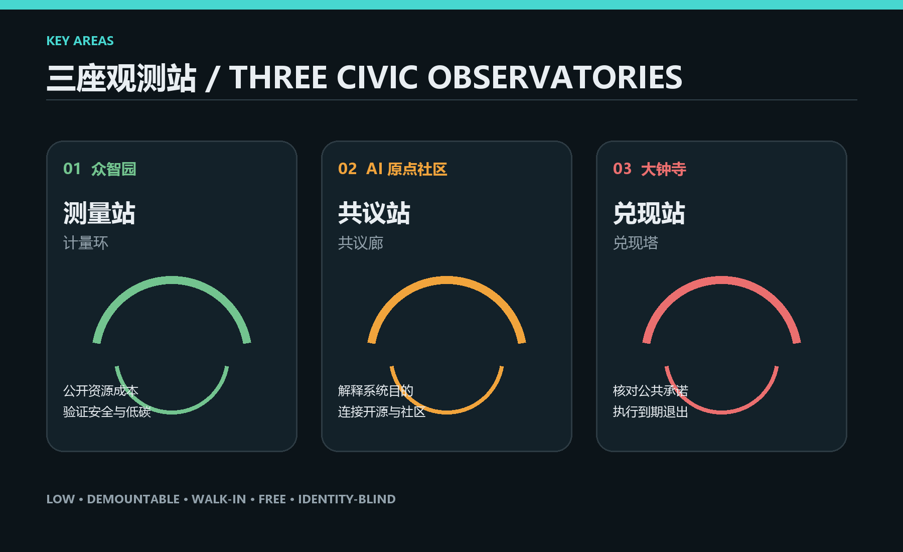
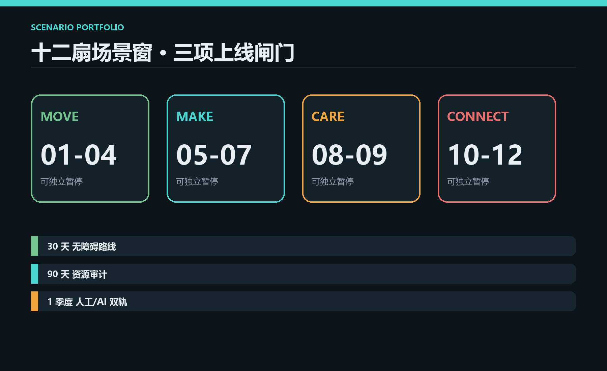
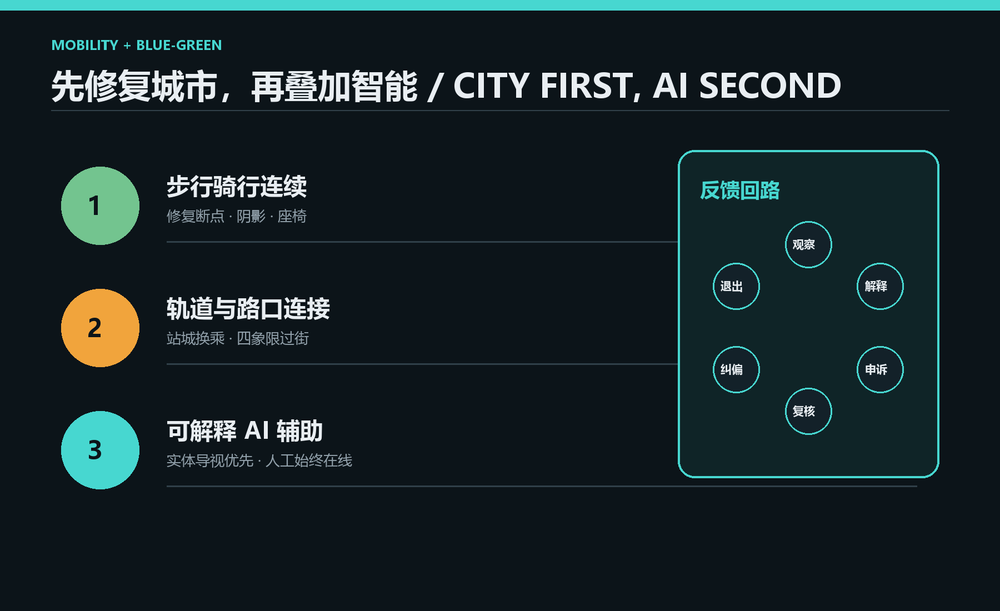

Observable Jing-Zhang: Making Urban AI Benefits, Costs and Accountability Visible
A public, walk-in observability layer for urban AI: one civic spine, three observatories and twelve scenario windows.
Observable Jing-Zhang
The proposal in one sentence
Make the public benefit, resource cost, accountable operator and exit condition of every urban AI service continuously visible in the city itself.
Most urban AI sits backstage. People experience outcomes but rarely know why a system exists, what it consumes, who is responsible or when it will stop. This proposal adds no new “city brain.” It builds a civic observability layer along the Jing-Zhang Railway Heritage Park. Every AI scenario must keep four public ledgers: Benefit, Resource, Responsibility and Sunset. People can inspect the record, object, and choose a human service; operators must publish purpose, data limits, human review and shutdown steps.

A proving ground asks whether a system passed a threshold once. An observable city keeps asking: what changed in daily life, who benefited, who paid, and who can correct it? This is both spatial design and public protocol. Source Standard
Evidence status and boundary statement
The package uses the repository's provisional SITE_BOUNDARY and three provisional KEY_AREA polygons for concept generation, content review, structured checks and visualization only. They are not official redlines, statutory planning or engineering evidence. Spatial data Spatial data
Machine gates and content review can proceed, but professional scoring and all statutory or engineering conclusions require official polygons, regulatory controls, road redlines, ownership, utilities, heritage and existing-building data. Conceptual area, green and public-space ratios are recomputed from submitted geometry at low confidence. FAR, height, density and setbacks remain unknown. Metric Depth
Concept and spatial structure
The structure is one civic observation spine, three observatories, two feedback wings and twelve scenario windows.
- One spine joins walking, stormwater, heritage and AI services. Low-screen or screenless windows use light rings, mechanical counters, physical scales and mirrored QR records to show four ledgers.
- Three observatories form an Instrument Yard at Zhongzhiyuan, a Civic Observatory at AI Origin Community and an Impact Exchange at Dazhongsi. They are standardized public layers embedded in renewal projects.
- Two feedback wings connect universities and open-source reviewers on one side with residents, businesses and frontline operators on the other.
- Twelve windows divide mobility, enterprise, community, culture, ecology and public service into small units that can pause independently.

| Ledger | Mandatory disclosure | Spatial interface | Correction trigger |
|---|---|---|---|
| Benefit | baseline, target, users, error | public scale ring | two periods without improvement |
| Resource | energy, compute, water, maintenance, labour | four-quadrant resource column | budget or carbon threshold exceeded |
| Responsibility | owner, vendor, duty officer, appeal | on-duty responsibility plate | no named operator means no launch |
| Sunset | expiry, human alternative, deletion, recovery | countdown window and physical stop | stop automatically if not renewed |

Three key areas
| Key area | Role | Spatial move | First validations |
|---|---|---|---|
| Zhongzhiyuan | Instrument Yard | demountable resource columns, test gardens and a low-carbon compute/heat-reuse walk at the Qinghe edge | night walking, low-carbon compute, accessible routing |
| AI Origin Community | Civic Observatory | open-source issue hall, model explanation tables and a parallel staffed counter linking campus, enterprise and neighbourhood | open-source transfer, community assistant, public-space maintenance |
| Dazhongsi | Impact Exchange | commitment wall, sunset lab and public reporting room tied to the station and four-quadrant pedestrian system | interchange, enterprise service, night activity governance |
The three landmarks - Meter Ring, Deliberation Gallery and Accountability Beacon - are low, demountable, free and walk-in. Their lighting indicates review state only; it never displays personal data. Final locations must be redrawn after official boundaries arrive. Spatial data Depth

Users, scenarios and tests
Five core user groups determine whether a service deserves renewal: residents need an easy human alternative; developers need reproducible tests; start-ups need an affordable compliance entry; university communities need open research interfaces; frontline operators need clear takeover and shutdown procedures. Children, older people, disabled people and people without smartphones are cross-cutting review groups.
| # | Scenario window | Place | Data boundary / human review | Exit condition |
|---|---|---|---|---|
| 01 | walking-gap diagnosis | spine | count only; traffic engineer reviews | persistent false positives |
| 02 | accessible route assistant | stations | on-device; hotline in parallel | route reliability too low |
| 03 | night-light dispatch | green spine | no facial data; duty override | complaints rise or no saving |
| 04 | stormwater and heat notice | blue-green areas | environment sensors; landscape review | sensor drift uncorrected |
| 05 | low-carbon compute kiosk | Zhongzhiyuan | aggregate energy only; audit | energy per service exceeds cap |
| 06 | safety sandbox | Zhongzhiyuan | synthetic data first; red-team signoff | risks remain open |
| 07 | open-source transfer desk | AI Origin | public code/licence; expert review | dependency rights unclear |
| 08 | community service assistant | AI Origin | minimum fields; staffed fallback | refusal or appeal rate too high |
| 09 | public-space maintenance | whole line | blurred location; work-order confirmation | no repair-time reduction |
| 10 | station interchange assistant | Dazhongsi | aggregate flow; staff takeover | peak-hour misdirection |
| 11 | enterprise compliance desk | Dazhongsi | voluntary inputs; lawyer review | advice not traceable |
| 12 | Jing-Zhang memory narrative | heritage nodes | sources published; curator review | source dispute unresolved |
Three pilot gates precede scaling: a 30-day accessible-route controlled test, a 90-day low-carbon compute resource audit, and a one-quarter human/AI parallel community-service comparison. Each registers baseline, owner, appeal and shutdown steps before launch. Depth

Mobility, blue-green space and culture
Mobility follows a strict order: repair walking and cycling continuity, connect transit and four-corner crossings, then add explainable AI assistance. Physical wayfinding comes first, phone service is optional and staffed service remains available. Spatial data
The heritage park is a sponge-green spine. Observation windows share rain gardens, shade, seats and maintenance interfaces. Sensors are removable and identity-blind by default. Submitted green and public-space ratios are conceptual calculations, not regulatory controls. Metric Metric
The cultural story is “from seeing trains to seeing systems.” The railway made modern infrastructure visible a century ago; the innovation belt now makes digital infrastructure legible. Sleeper spacing, platform rhythm and railway steel inform responsibility plates, countdown windows and public scales without copying historic buildings.

Governance, operations and phasing
The “Observable Jing-Zhang Protocol” is a lightweight agreement, not a new agency. Each scenario card is signed by a public owner, technology operator, duty officer and independent reviewer. Resident and accessibility representatives hold quarterly review seats. Fields adapt lessons from the UK Algorithmic Transparency Recording Standard, Singapore AI Verify, Helsinki and Dutch registers, Boston CityScore and Decidim. These are transferable mechanisms, not local statutory authority. Source Source Source Source Source Source
- 0-6 months - register: define public fields, responsibility plates and three test protocols with temporary installations.
- 6-18 months - pilot three stations: launch one or two scenarios per station with human/AI parallel service and quarterly review.
- 18-36 months - connect the belt: expand only renewed scenarios while repairing walking and public-space gaps.
- After 36 months - renew by evidence: retire underperforming services and return space to ordinary public use.
Success is not model count. It is measured by human-fallback availability, record completeness, appeal closure time, resource per service, accessible-task success and completed expiry shutdowns. Ownership, funding, approvals and engineering remain prerequisites. Spatial data
Sources and copyright
All text, structured data, diagrams, offline web pages and PDFs were created collaboratively by GitHub participant glove11111-design and OpenAI Codex. The hero image was generated originally with OpenAI's image-generation tool and uses no external brands, remote assets or tracking. Sources and permissions are listed in sources.json and report/copyright_statement.md. Recompute the entire package when official boundaries are released.